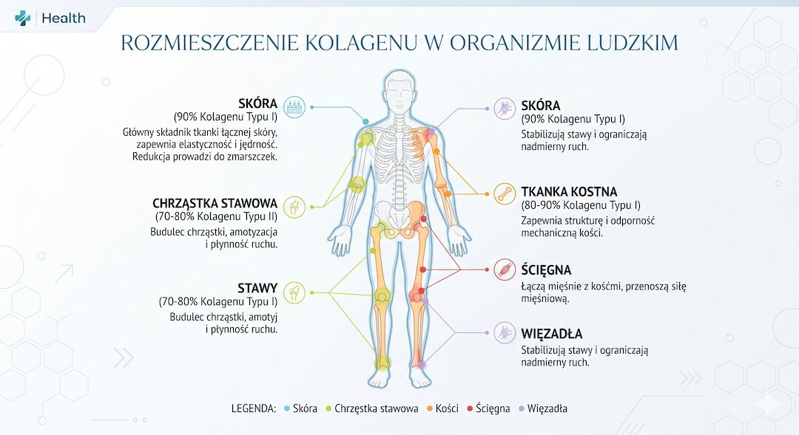
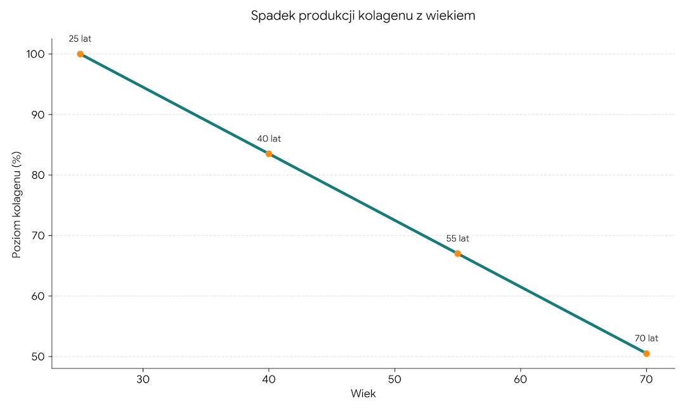
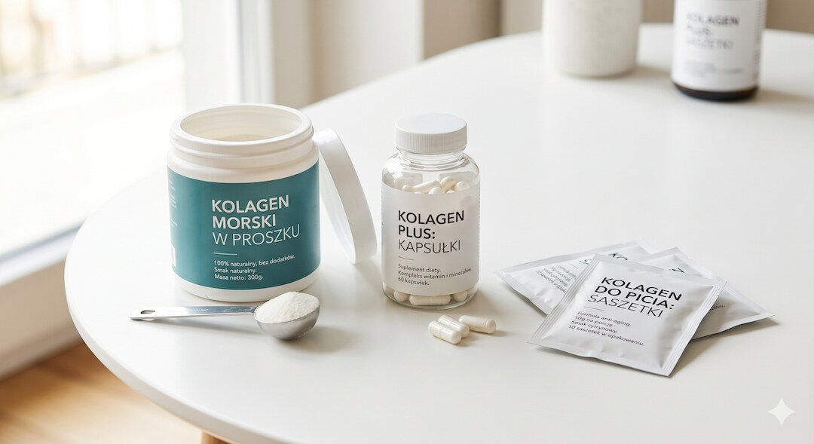

Zanim wyrzucisz kolejną puszkę proszku do szafy z myślą, że i tak nie działa – poczekaj. Badania z ostatnich lat mówią co innego. Kolagen spada po pięćdziesiątce i można coś z tym zrobić. Tylko trzeba wiedzieć: co brać, ile i kiedy.
Szybka odpowiedź
Suplementacja kolagenu po 50. roku życia przynosi mierzalne efekty w poprawie elastyczności skóry, nawilżenia oraz ruchomości stawów. Badania kliniczne potwierdzają, że hydrolizowane peptydy kolagenowe w dawce od 2,5 do 15 gramów dziennie są skutecznie wchłaniane. Pierwsze rezultaty pojawiają się po 8–12 tygodniach codziennego stosowania. Suplementację należy zawsze łączyć z witaminą C.
Kluczowe wnioski
- Produkcja kolagenu maleje od 25. roku życia, a po pięćdziesiątce proces ten przyspiesza – skóra może stracić nawet do 30% kolagenu w kilka lat po menopauzie.
- Hydrolizowane peptydy (2,5–15 g/dobę) mają naukowe poparcie dla skóry, stawów i kości, ale efekty wymagają minimum 8–12 tygodni regularności.
- Nie ma jednego testu krwi na poziom kolagenu w organizmie – w diagnostyce kostnej lekarze stosują markery pośrednie P1NP oraz CTX.
- Witamina C jest niezbędna do syntezy kolagenu na poziomie biochemicznym, dlatego suplementację należy zawsze łączyć z jej odpowiednim spożyciem.
Co to jest kolagen i za co naprawdę odpowiada?
Kolagen to białko strukturalne – najbardziej obfite w ludzkim ciele. Stanowi około 30% wszystkich białek w organizmie i jest dosłownie rusztowaniem, które trzyma cię w całości. Skóra, ścięgna, więzadła, chrząstki, kości, naczynia krwionośne – wszystko to zawiera kolagen jako główny składnik budulcowy.
Kolagen nie jest jednym białkiem – to cała rodzina. Naukowcy opisali ponad 28 typów, ale dla osoby po pięćdziesiątce liczą się przede wszystkim trzy. Typ I stanowi aż 90% kolagenu w ciele – jest w skórze, kościach, ścięgnach i więzadłach. To on odpowiada za sprężystość skóry i wytrzymałość tkanki łącznej. Typ II to kolagen chrząstek stawowych – bez niego stawy się zużywają. Typ III współpracuje z Typem I w skórze i ścianach naczyń krwionośnych.
Kolagen robi cztery rzeczy naraz: nadaje skórze elastyczność i nawilżenie, amortyzuje stawy, wzmacnia kości – bo stanowi organiczną matrycę, do której wbudowuje się wapń – i utrzymuje ścięgna oraz więzadła w dobrej kondycji. Gdy go ubywa, czujesz to jednocześnie na wszystkich tych frontach. Dlatego temat jest tak ważny po pięćdziesiątce – nie dlatego, że reklama tak mówi.

Kiedy kolagen zaczyna spadać i co ten spadek przyspiesza?
Tu jest pierwszy zimny prysznic: produkcja kolagenu zaczyna maleć już około 25. roku życia. Nie po pięćdziesiątce. Nie po menopauzie. Po dwudziestce piątej. Tempo tego spadku wynosi mniej więcej 1–1,5% rocznie. To cicho, ale konsekwentnie. Po 25 latach – czyli właśnie gdzieś w okolicach pięćdziesiątki – suma strat robi się poważna.
Badania szacują, że skóra kobiet traci nawet 30% kolagenu w ciągu pierwszych pięciu lat po menopauzie, a potem spada dalej – około 2% rocznie. Mężczyźni też tracą, ale wolniej i bez tak wyraźnego skoku hormonalnego. Efekty widać gołym okiem: głębsze zmarszczki, skóra która mniej wraca do poprzedniego kształtu po uszczypnięciu, stawy które rano potrzebują rozruchu, ścięgna które dają o sobie znać przy intensywniejszym treningu.
Kilka czynników znacząco przyspiesza ten proces. Promieniowanie UV niszczy fibroblasty – komórki produkujące kolagen – i jest jednym z głównych powodów starzenia się skóry. Cukier (szczególnie nadmiar fruktozy i glukozy) niszczy kolagen przez glikację – tworzenie sztywnych, uszkodzonych wiązań białkowych. Palenie blokuje syntezę kolagenu na poziomie komórkowym. Stres chroniczny podnosi kortyzol, który hamuje produkcję nowych włókien kolagenowych. Do tego dochodzi niedobór białka w diecie – bo kolagen to białko i organizm po prostu nie ma z czego go budować, gdy jesz mało protein.

Jak sprawdzić poziom kolagenu – czy istnieje badanie krwi?
Tutaj trzeba być szczerym: nie ma jednego, standardowego badania krwi, które powie ci „twój kolagen wynosi X i jest za niski”. To inaczej niż z witaminą D czy ferrytyną. Kolagen jest rozproszony w tkankach i nie krąży we krwi jako mierzalna, wolna cząsteczka.
To, czego lekarze faktycznie używają, to markery obrotu kolagenowego – głównie w kontekście kości. Dwa kierunki: markery budowy i markery rozkładu. P1NP (prokolagen typu I N-końcowy propeptyd) to marker syntezy kolagenu w kościach – rośnie, gdy kości aktywnie budują nową tkankę. Wykonuje się go przy osteoporozie lub monitorowaniu leczenia kości. CTX-I (C-końcowy telopeptyd kolagenu typu I) to marker rozkładu kości – pokazuje, jak szybko kolagen kostny jest degradowany. Oba badania możesz zamówić prywatnie, kosztują 50–100 zł każde.
Dla tkanki miękkiej (skóra, chrząstki) sprawa jest trudniejsza. Złotym standardem oceny kolagenu skórnego jest biopsja z histologią – nikt normalnie tego nie zleca przed kupnem proszku. W praktyce: jeśli chcesz wiedzieć, czy masz problem z kolagenem kostnym – zrób densytometrię (DEXA) i zapytaj o P1NP/CTX. Reszta to obserwacja kliniczna: jak wygląda skóra, jak reagują stawy, jak szybko goją się drobne urazy.
Warto też sprawdzić czynniki, które pośrednio wpływają na produkcję kolagenu: poziom witaminy C, cynku i miedzi w surowicy. Jeśli masz niedobory tych mikroelementów, żaden suplement kolagenowy nie da pełnego efektu. Więcej o tym niżej. Warto też spojrzeć na całościowy przegląd suplementacji po pięćdziesiątce, żeby nie dublować składników.
Co naprawdę pokazują badania naukowe o suplementacji?
Badania mówią jedno: hydrolizowane peptydy kolagenu wchłaniają się i dochodzą do tkanek docelowych. To było przez lata kwestionowane – zakładano, że białko podane doustnie po prostu zostanie strawione do aminokwasów i trafi do przypadkowych tkanek. Badania z 2019 roku wykazały jednak, że peptydy kolagenowe (zwłaszcza dipeptydy Pro-Hyp i Hyp-Gly) faktycznie pojawiają się w krwiobiegu po spożyciu i stymulują fibroblasty do syntezy nowego kolagenu.
Skóra: Jedno z najczęściej cytowanych badań (Proksch i wsp., 2014, Skin Pharmacology and Physiology) wykazało, że suplementacja 2,5 g hydrolizowanych peptydów kolagenu przez 8 tygodni poprawiła elastyczność skóry u kobiet w wieku 35–55 lat. Efekty były mierzalne i utrzymały się przez 4 tygodnie po zakończeniu suplementacji. Inne badanie tego samego zespołu wykazało poprawę nawilżenia i redukcję widoczności zmarszczek przy dawce 2,5–5 g przez 8 tygodni. Jedno zastrzeżenie: te badania były częściowo finansowane przez producentów suplementów – co jest typowym ograniczeniem tej literatury.
Stawy i ścięgna: Clark i wsp. (2008) przeprowadzili 24-tygodniowe badanie z hydrolizatem kolagenu (10 g/dobę) na grupie sportowców z bólami stawów. Wyniki wykazały zmniejszenie dolegliwości bólowych w porównaniu z placebo. Shaw i wsp. (2017, American Journal of Clinical Nutrition) pokazali, że 15 g żelatyny z witaminą C przed treningiem zwiększa syntezę kolagenu w ścięgnach mierzalną ex vivo. To jedno z lepiej zaprojektowanych badań w tym obszarze – pokazuje, że kolagen działa najlepiej, gdy jest wspierany aktywnością fizyczną.
Mięśnie i masa ciała: Zdzieblik i wsp. (2015, British Journal of Nutrition) zbadali starszych mężczyzn z sarkopenią. Ci, którzy przyjmowali 15 g peptydów kolagenu dziennie i ćwiczyli siłowo, uzyskali lepsze wyniki w zakresie beztłuszczowej masy ciała niż ci, którzy tylko ćwiczyli. Kości: König i wsp. (2018, Nutrients) wykazali wzrost gęstości mineralnej kości u kobiet po menopauzie przyjmujących 5 g peptydów kolagenu dziennie przez 12 miesięcy. Temat wymaga więcej długoterminowych badań. Ogólnie: trening siłowy pozostaje najskuteczniejszą metodą dbania o kości i kolagen go nie zastąpi.
Hydrolizat, peptydy czy niedenaturowany – jaki kolagen wybrać?
Na półce aptecznej widzisz kolagen hydrolizowany, peptydy kolagenu, kolagen niedenaturowany typ II i jeszcze kilka innych nazw. To nie jest przypadkowe zagmatwanie. Za każdą z tych form stoi inny mechanizm działania i inne przeznaczenie. To ważny element planu zdrowia i sprawności po 50. roku życia.
Kolagen hydrolizowany = peptydy kolagenu – to to samo. Kolagen poddany hydrolizie enzymatycznej, czyli pocięty na krótkie łańcuchy aminokwasów. Jest dobrze wchłaniany – znacznie lepiej niż natywny kolagen z rosołu, który rozkłada się w żołądku jak każde inne białko. Peptydy kolagenowe mają średnią masę cząsteczkową ok. 2–5 kDa, co pozwala im przechodzić przez ścianę jelita i docierać do tkanek. Forma ta ma najlepsze wsparcie badań dla skóry, kości i ścięgien. Dawki w badaniach: 2,5–15 g/dobę.
Kolagen niedenaturowany typ II (UC-II) działa inaczej – przez mechanizm tolerancji immunologicznej. Przyjmowany w małych dawkach (40 mg/dobę!) indukuje tolerancję na własny kolagen stawowy, co może zmniejszać stan zapalny w chrząstkach. Tej formy nie miesza się z hydrolizatem i stosuje się ją w zupełnie innych dawkach. Jeśli twój problem to stawy zapalne, UC-II może być lepszym wyborem niż standardowy proszek.
Co do źródła: kolagen wołowy (bovine) zawiera głównie Typ I i III – dobry dla skóry, kości, ścięgien. Kolagen rybi (marine) to głównie Typ I o bardzo niskiej masie cząsteczkowej – wchłania się wyjątkowo dobrze i ma dużo badań dla skóry. Jest też droższy. Obie formy działają. Jeśli nie masz powodów do preferowania jednej – wybierz tańszą lub tę, która lepiej smakuje, bo regularność jest ważniejsza niż źródło białka.

Ile kolagenu brać i o jakiej porze, żeby to miało sens?
Dawkowanie zależy od celu. Nie ma jednej magicznej liczby, która pasuje do wszystkiego. Większość suplementów na rynku podaje dawki niższe niż te stosowane w badaniach – bo tak jest taniej w produkcji. Warto to wiedzieć przed zakupem.
Dla skóry – badania Proksch używały 2,5 g/dobę przez 8 tygodni i uzyskały mierzalne efekty. Inne prace sugerują lepsze wyniki przy 5 g. Dla ścięgien i więzadeł Shaw et al. używali 15 g żelatyny godzinę przed treningiem. Dla mięśni (sarkopenia) Zdzieblik stosował 15 g/dobę. Dla kości König – 5 g/dobę. Dla stawów (hydrolizat) Clark – 10 g/dobę.
Kiedy brać? Dla stawów i ścięgien badanie Shawa sugeruje kolagen z witaminą C ok. 30–60 minut przed treningiem – to daje najlepsze środowisko dla syntezy kolagenu w przeciążanej tkance. Dla skóry i kości pora prawdopodobnie nie ma aż takiego znaczenia – ważna jest regularność. Możesz go brać rano z wodą, w koktajlu, w kawie. Tylko unikaj mieszania z gorącymi napojami powyżej 70°C, bo wysoka temperatura może częściowo degradować peptydy.
Czas działania to najważniejsza rzecz, której nie mówi reklama. Kolagen nie działa po tygodniu. Badania skórne trwały minimum 8 tygodni. Badania stawowe – 24 tygodnie. Kości – 12 miesięcy. Jeśli po 3 tygodniach rezygnujesz, bo nie czujesz różnicy – zmarnowałeś pieniądze w połowie drogi. Minimalne okno, po którym warto oceniać efekty: 3 miesiące codziennego stosowania. Warto też spojrzeć na dietę przeciwzapalną – zmniejszenie stanu zapalnego poprawia efektywność regeneracji tkanki łącznej.

Czy bez witaminy C kolagen w ogóle ma sens?
Krótka odpowiedź: bez witaminy C synteza kolagenu jest upośledzona. To nie jest chwyt marketingowy firm dodających Vit C do suplementów. To czysta biochemia. Witamina C jest niezbędnym kofaktorem dwóch enzymów – prolilhydroksylazy i lizylhydroksylazy – które przekształcają prolinę i lizynę w hydroksyprolinę i hydroksylizynę. Te zmodyfikowane aminokwasy są kluczowe dla stabilności potrójnej helisy kolagenu. Bez nich kolagen się nie skleja prawidłowo.
Klasycznym dowodem jest szkorbut – niedobór witaminy C, który prowadzi do rozpadania się tkanki łącznej. Dziąsła krwawią, zęby wypadają, rany się nie goją, bo nowy kolagen nie powstaje. Nikt z nas nie ma szkorbutu, ale subkliniczne niedobory witaminy C są zaskakująco częste – szczególnie u palaczy, osób jedzących mało warzyw i tych z chronicznym stresem. Dlatego zawsze, gdy suplementujesz kolagen, zadbaj o odpowiedni poziom Vit C: minimum 75–90 mg/dobę (zalecane normy), przy aktywnej suplementacji kolagenu – 200–500 mg/dobę wystarczy. Megadawki (>1 g) nie dają dodatkowych korzyści dla syntezy kolagenu.
Dwa inne mikroelementy też mają tutaj znaczenie. Cynk jest kofaktorem metaloproteinaz macierzy (MMP) – enzymów, które przebudowują tkankę łączną. Jego niedobrór upośledza gojenie i regenerację. Miedź jest niezbędna dla lizyloksydazy – enzymu wiążącego włókna kolagenowe. Niedobory miedzi są rzadkie przy normalnej diecie, ale cynk warto monitorować, szczególnie jeśli trenujesz siłowo i chcesz chronić tkankę mięśniową. Dieta bogata w mięso, orzechy, nasiona i warzywa liściaste zwykle pokrywa te potrzeby bez suplementacji.
Kiedy suplementacja kolagenu ma sens, a kiedy to przepalanie pieniędzy?
Kolagen ma realne podstawy naukowe w kilku sytuacjach: chcesz poprawić kondycję skóry po menopauzie, masz bóle przeciążeniowe ścięgien lub więzadeł i aktywnie trenujesz, masz stwierdzoną osteopenię i szukasz uzupełnienia do treningu siłowego i wapnia, albo po 60-tce chcesz zapobiegać sarkopenii i połączyłeś kolagen z regularnym treningiem oporowym. W tych przypadkach badania mówią: spróbuj przez 3 miesiące i patrz na efekty.
Kiedy to strata pieniędzy? Gdy oczekujesz cudu po 2 tygodniach. Gdy bierzesz za małą dawkę (np. 1 g w kapsułce). Gdy nie dostarczasz witaminy C. Gdy nie ćwiczysz – bo większość badań pokazuje efekty kolagenu w połączeniu z aktywnością, nie jako pasywna pigułka na zmarszczki. I gdy wydajesz 200 zł na kolagen morski premium, a nie wiesz, czy pijesz wystarczająco wody, czy śpisz 7 godzin i czy spożywasz wystarczające ilości białka dziennie. Niedobór białka całkowitego zawsze będzie ważniejszym problemem.
Kolagen to jeden z lepiej przebadanych suplementów na rynku. To nie znaczy, że jest cudowny. Ma umiarkowane dowody dla konkretnych zastosowań. Efekty są realne, ale skromne i wymagają czasu. Jeśli oczekujesz dramatycznej zmiany – rozczarujesz się. Jeśli traktujesz go jako element szerszej strategii zdrowotnej po pięćdziesiątce – może być sensownym elementem codziennych nawyków.
Najczęściej zadawane pytania
Czy kolagen naprawdę działa na stawy?
Tak, hydrolizowane peptydy kolagenu mają solidne poparcie w badaniach klinicznych. Regularne przyjmowanie 10 gramów kolagenu dziennie przez okres 24 tygodni wykazuje mierzalne zmniejszenie dolegliwości bólowych stawów oraz znaczną poprawę ich codziennej ruchomości.
Ile kolagenu brać dziennie po 50-tce?
Dawkowanie kolagenu zależy od Twojego celu. Badania kliniczne sugerują stosowanie 2,5–5 gramów dziennie dla poprawy kondycji skóry, 5 gramów dla wzmocnienia kości oraz od 10 do 15 gramów dla wsparcia stawów i ścięgien.
Czy kolagen pomaga przy sarkopenii i utracie mięśni?
Tak, badania kliniczne na starszych mężczyznach wykazują, że codzienna suplementacja 15 gramów peptydów kolagenowych połączona z regularnym treningiem siłowym pozwala na znacznie szybszą odbudowę oraz skuteczną ochronę beztłuszczowej masy mięśniowej.
Czy kolagen poprawia gęstość kości po menopauzie?
Badania kliniczne jednoznacznie wskazują, że codzienne przyjmowanie 5 gramów hydrolizowanych peptydów kolagenowych przez okres dwunastu miesięcy prowadzi do mierzalnego wzrostu gęstości mineralnej kości u kobiet po przebytej menopauzie.
Po jakim czasie kolagen zaczyna działać?
Suplementacja kolagenu wymaga cierpliwości oraz dużej regularności. Pierwsze zauważalne efekty dla elastyczności skóry widać po 8–12 tygodniach, poprawę stawów po 24 tygodniach, a stabilna odbudowa gęstości kości zajmuje około dwunastu miesięcy.
Czy można sprawdzić poziom kolagenu badaniem krwi?
Nie istnieje żadne rutynowe badanie krwi oceniające bezpośrednio poziom kolagenu w organizmie. W praktyce klinicznej lekarze stosują specjalistyczne markery obrotu kostnego z krwi, takie jak P1NP i CTX-I, oraz badanie densytometryczne.
Kolagen może być dodatkiem, ale odbudowa tkanek dzieje się głównie wtedy, gdy dobrze śpisz. Plan poprawy nocy znajdziesz w Centrum Snu po 50-tce.
Źródła
- Proksch E. et al. (2014) – Oral Supplementation of Specific Collagen Peptides, Skin Pharmacology and Physiology
- Shaw G. et al. (2017) – Vitamin C-enriched gelatin supplementation augments collagen synthesis, American Journal of Clinical Nutrition
- Clark K.L. et al. (2008) – 24-Week study on collagen hydrolysate in athletes with joint pain, Current Medical Research and Opinion
- Zdzieblik D. et al. (2015) – Collagen peptide supplementation with resistance training improves body composition in sarcopenic men, British Journal of Nutrition
- König D. et al. (2018) – Specific Collagen Peptides Improve Bone Mineral Density in Postmenopausal Women, Nutrients
- León-López A. et al. (2019) – Hydrolyzed Collagen Sources and Applications, Molecules
- Vollmer D.L. et al. (2018) – Toward Optimized Skin Care – The Role of Nutrients for Skin Health, Nutrients
- Benito-Ruiz P. et al. (2009) – RCT on collagen hydrolysate for osteoarthritis, International Journal of Food Sciences and Nutrition
- Varani J. et al. (2006) – Decreased Collagen Production in Chronologically Aged Skin, American Journal of Pathology
Uwaga: Artykuł ma charakter informacyjny i edukacyjny. Nie zastępuje konsultacji lekarskiej, diagnozy ani leczenia.